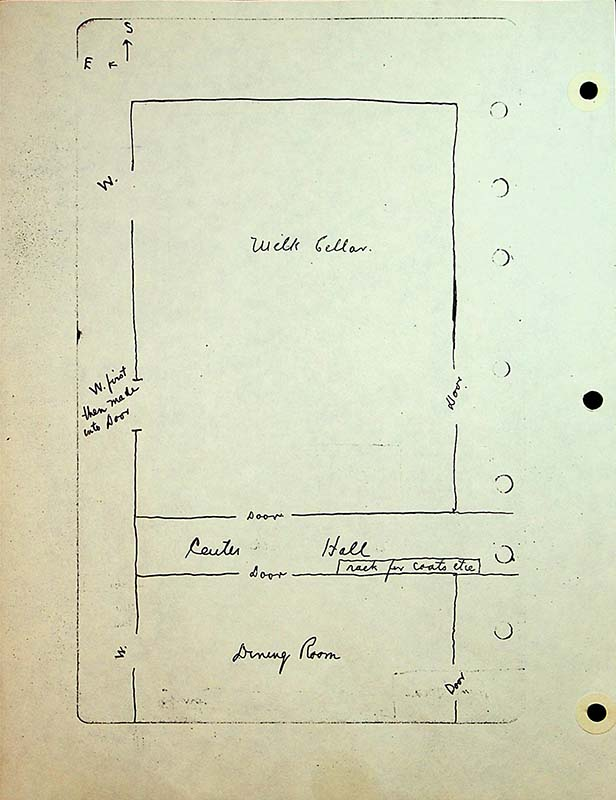

compass in top left indicating south is up and east is left
Milk Cellarcenter of top room
W (window), W (window)first then made into door, W (window)along left wall of room
Doordoorway on right side of paper
Center Hallacross middle of page
rack for coats, etcin center hall on bottom side
Dining Roomroom partially drawn below